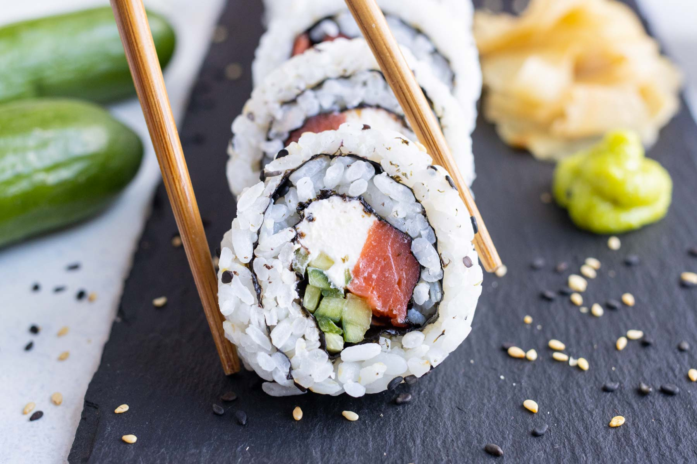

Philadelphia Roll

Description
Is there anything better than the flavor of savory smoked salmon and luscious cream cheese?
It’s one of those quintessential food combos that walk hand in hand everywhere they go.
It’s exactly that wonderful combination that makes the Philadelphia roll so dang delicious!
Now, as far as traditional Japanese sushi ingredients go, cream cheese isn’t anywhere close to that list.
However, when you mix cream cheese with smoked salmon, cucumber and Japanese seaweed (nori),
you get a flavor combination so amazing that you can totally see why Philadelphia rolls are one of the most iconic sushi rolls in the West.
Ingredients for Sushi Rice
- 3 cups cooked Japanese rice
- 40 ml rice vinegar
- 1 tablespoon sugar
- 3/4 teaspoon salt
Ingredients for rolls
- 4 oz Smoked Salmon
- 4 oz Cream Cheese
- 1 Cucumber
- 3 nori (dried seaweed) sheets
- Sesame seeds
Instructions
- Place cooked rice in a container and add rice vinegar, sugar and salt. Mix well.
- Wrap bamboo mat with plastic wrap and have a bowl of water mixed with a little rice vinegar on the side.
- Lay a nori sheet with the shiny side facing down on the bamboo mat. Add 1 cup of rice to the center of the nori sheet and wet your fingers with vinegar water.
- Sprinkle about 1/2 teaspoon sesame seeds onto the rice evenly across.
- Turn the nori sheet over so the rice is facing down. Move the nori sheet close to the edge of the bottom of the bamboo mat.
- Cut smoked salmon, cream cheese and cucumber into stick size pieces and place horizontally on the nori. Each ingredient should form a line across.
- Grab the bottom edges of the mat with your thumbs and hold on to the toppings with your other fingers.
- Roll into a tight cylinder and lift the edges of the bamboo mat to prevent it from rolling into the roll together with the filling.
- The mat should look like the letter C from the side as you roll forward. Keep rolling forward using a little pressure and let go when the roll is done.
- Cut the roll in half and then into thirds.
- Serve with soy sauce and wasabi.